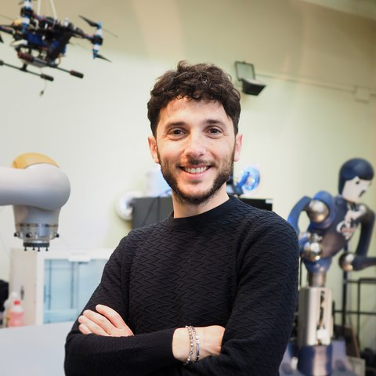
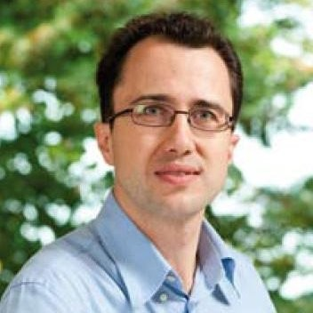
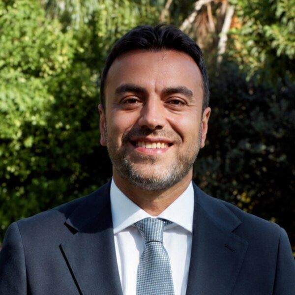
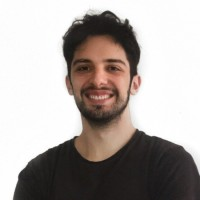
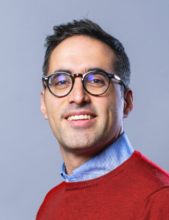

About the workshop
From 80–90% success rates to production-line trust
Robot manipulation is undergoing a paradigm shift: Vision-Language-Action models, world models, and generative policies are turning narrow, single-task pipelines into general-purpose agents that map language to closed-loop manipulation of unseen objects.
Yet the deployment question remains open — not what robots can manipulate, but whether we can trust them to do it reliably. Success rates of 80–90%, remarkable in research, are still far from deployment-ready on a production line, short of Industry 5.0's vision of resilient, human-centric automation. This workshop frames trustworthy manipulation as a measurable engineering property, built on three still-open pillars: robustness in physical interaction and long-horizon execution, verification via digital twins and reproducible benchmarks, and recovery through human-robot collaboration and replanning.
Surface the open challenges that still separate generalist policies from certifiably reliable manipulation.
Share recent advances in robust manipulation and long-horizon execution within the broader physical-AI research agenda.
Advance digital twins and open, reproducible benchmarks as first-class research outputs, not afterthoughts.
Foster academia–industry dialogue to ground what "trustworthy" means for real-world deployment.
Topics
Four open fronts, one closed loop
Each topic corresponds to a pillar still open for discussion.
Foundation Models for Manipulation
Generalization, uncertainty quantification, and explainability of VLAs and World Action Models.
Robust Physical Interaction
Perception, planning, and control for fragile, transparent, and deformable objects; multimodal visuo-tactile perception; long-horizon assembly and disassembly.
Verification and Benchmarking
Digital twins for sim-to-real transfer; reproducible validation and testing protocols for manipulation policies.
Human-Robot Collaboration
Intention detection, human-in-the-loop execution, and online replanning for failure detection and recovery in shared workspaces.
Invited talks
Speakers
Talks run 12–15 minutes each, closing with a 20–30 minute panel discussion with live audience questions via Slido — all within the workshop's 90-minute session. Talk titles will be announced closer to the event.

ConfirmedMario Selvaggio
Università di Napoli Federico II
Talk title — to be announced

ConfirmedCristian Secchi
Università di Modena e Reggio Emilia
Talk title — to be announced

ConfirmedArash Ajoudani
Istituto Italiano di Tecnologia (IIT)
Talk title — to be announced

ConfirmedNorman Di Palo
Google DeepMind
Talk title — to be announced

ConfirmedGiovanni Di Stefano
COMAU
Talk title — to be announced
Good to know
Important information
Participate
Call for Extended Abstracts
Submission guidelines
We invite extended abstracts of 2–4 pages on any of the workshop's topics. Submissions are peer-reviewed by the organizing committee, and selected contributions are invited to present in the pitch and poster session during the workshop.
Submissions are handled through EasyChair. Submit on EasyChair →
The call will be disseminated through:
- Length2–4 pages, extended abstract format
- ReviewPeer-reviewed by the organizing committee
- OutcomePitch talk + poster session at the workshop
- PlatformEasyChair
Who's behind it
Organizers
Enrico Donato
Scuola Superiore Sant'Anna, Pisa
enrico.donato@santannapisa.itWhat comes out of it
Outcomes & follow-up
Shared materials
Presentation slides and poster materials shared via the workshop webpage.
White paper
"Trustworthy Manipulation: Open Challenges 2026," published on the workshop webpage within one month of the event.
Follow-up activities
Collaborative projects, community-driven benchmark and validation-protocol proposals, and academia–industry partnerships on pilot deployments.
Special issue — IEEE Robotics & Automation Magazine
A Special Issue proposal on "Trustworthy Manipulation: Robustness, Verification, and Recovery for Real-World Deployment" will be submitted to RAM by early September 2026 and announced during the workshop. The editorial team includes organizers and invited speakers, with submissions opening in January 2027 through an open call and invitations to workshop participants. If RAM is not available on this timeline, IEEE RA-L or Frontiers in Robotics and AI are the backup venues.
Second edition — IROS 2027, Florence
A follow-up workshop is planned at IEEE/RSJ IROS 2027 in Florence, Italy, bringing the initiative to the international community. Junior speakers will be selected based on their contributions to the RAM Special Issue, connecting the two events.
Registration
The two free one-day registrations are reserved for confirmed invited speakers who are not otherwise funded. Additional speakers and attendees register through the standard I-RIM process, supported by their own funds.